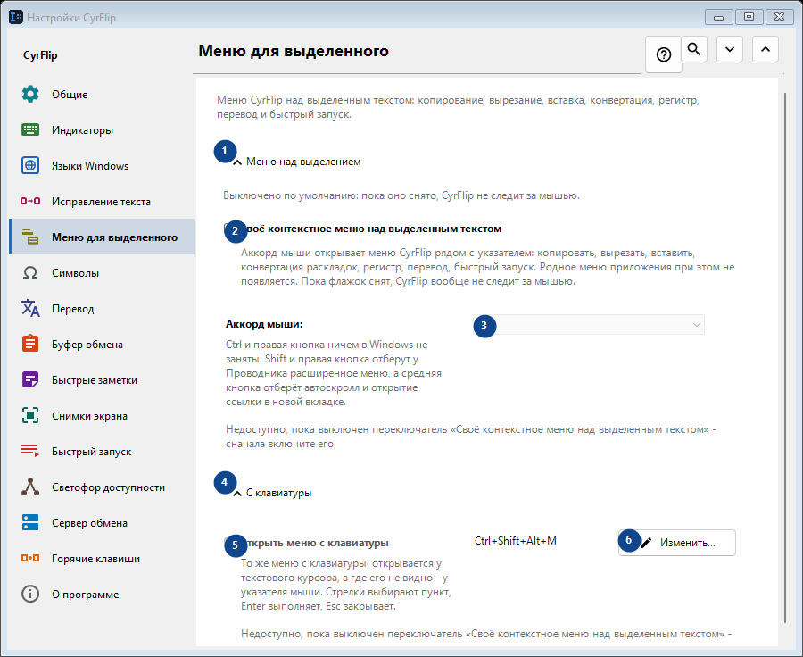
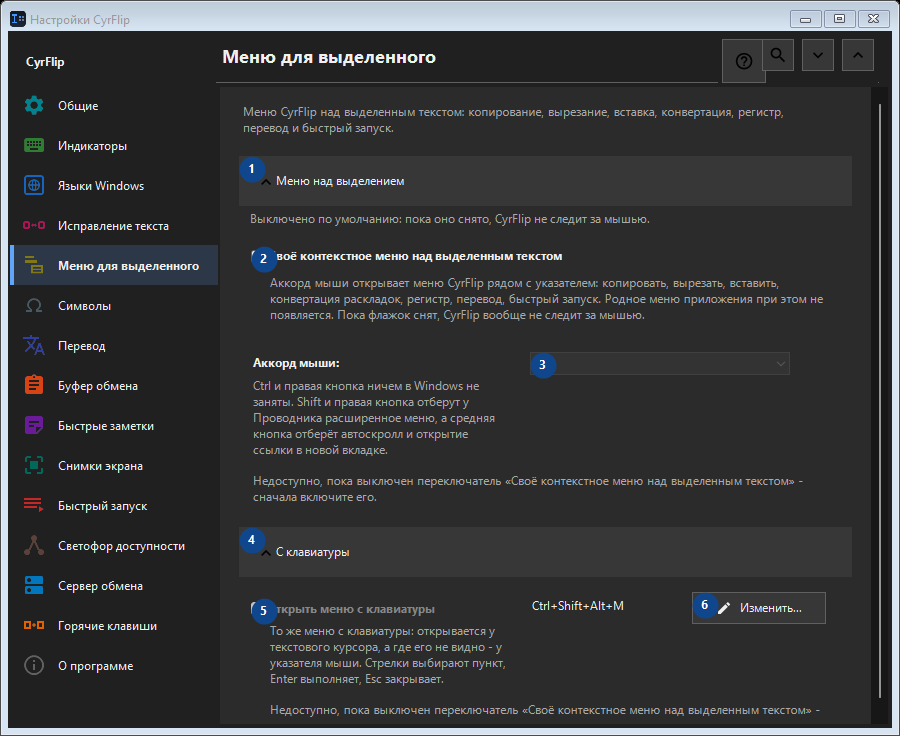

Меню для выделенного
Для чего это окно
Меню CyrFlip над выделенным текстом: копирование, вырезание, вставка, конвертация, регистр, перевод и быстрый запуск.


Порядок действий
Настройки применяются сразу. Обязательного порядка нет; используйте группы ниже.
Элементы
1. Меню над выделением
Используйте команду, когда нужно указанное действие. Прочитайте запрос подтверждения перед согласием.
Ваши сочетания клавиш2. Своё контекстное меню над выделенным текстом
Аккорд мыши открывает меню CyrFlip рядом с указателем: копировать, вырезать, вставить, конвертация раскладок, регистр, перевод, быстрый запуск. Родное меню приложения при этом не появляется. Пока флажок снят, CyrFlip вообще не следит за мышью.
Ваши сочетания клавиш3. Аккорд мыши
Недоступно, пока выключен переключатель «Своё контекстное меню над выделенным текстом» - сначала включите его. Элемент сейчас недоступен. Сначала включите функцию или выберите запись.
Ваши сочетания клавиш4. С клавиатуры
Используйте команду, когда нужно указанное действие. Прочитайте запрос подтверждения перед согласием.
Ваши сочетания клавиш5. Открыть меню с клавиатуры
Недоступно, пока выключен переключатель «Своё контекстное меню над выделенным текстом» - сначала включите его. Элемент сейчас недоступен. Сначала включите функцию или выберите запись.
Ваши сочетания клавиш6. Изменить - Открыть меню с клавиатуры
Используйте команду, когда нужно указанное действие. Прочитайте запрос подтверждения перед согласием.
Ваши сочетания клавиш